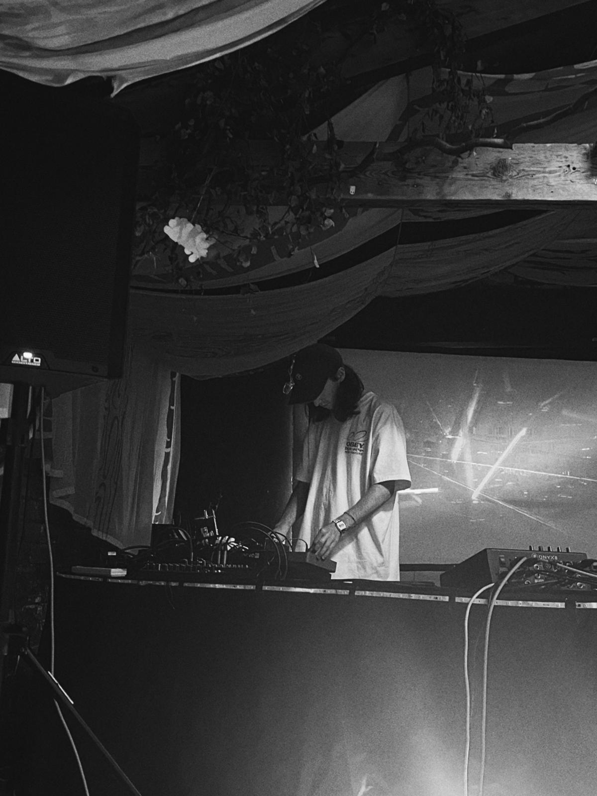

Bio

I'm a musician, composer, and sound designer based in Sheffield. My practice is pretty varied, mostly moving between ambient music, experimental performance, and sound art. I release my solo musical projects under the moniker brainjjus, while everything else — from interactive media and experimental narrative games to session work — goes under my own name.
A lot of my focus is on how sound functions in different spaces. Recently, this included premiering Things Fall Between, a six-movement solo performance, and co-creating Gut Feelings as part of individual Hotpot, a collaborative duo with Korean researcher-producer Nam Joo Huh. Gut Feelings is an exploration of "sonic shame" that we've taken across the UK and Europe as both a performance lecture and an immersive exhibition.
Alongside my own productions, which rely heavily on field recordings and synthesis, I'm a classically trained guitarist and multi-instrumentalist. I play bass for the Sheffield band Cleaver Blue and regularly work as a session and dep musician for artists like Selina Lee and Mat Hook.
In my day to day life, I also work as the music technician for Doncaster Council, where I handle all sorts, mostly repairing broken things!